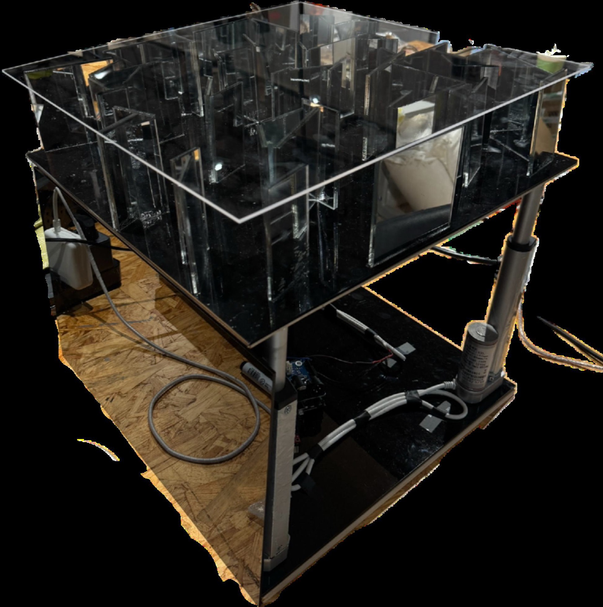
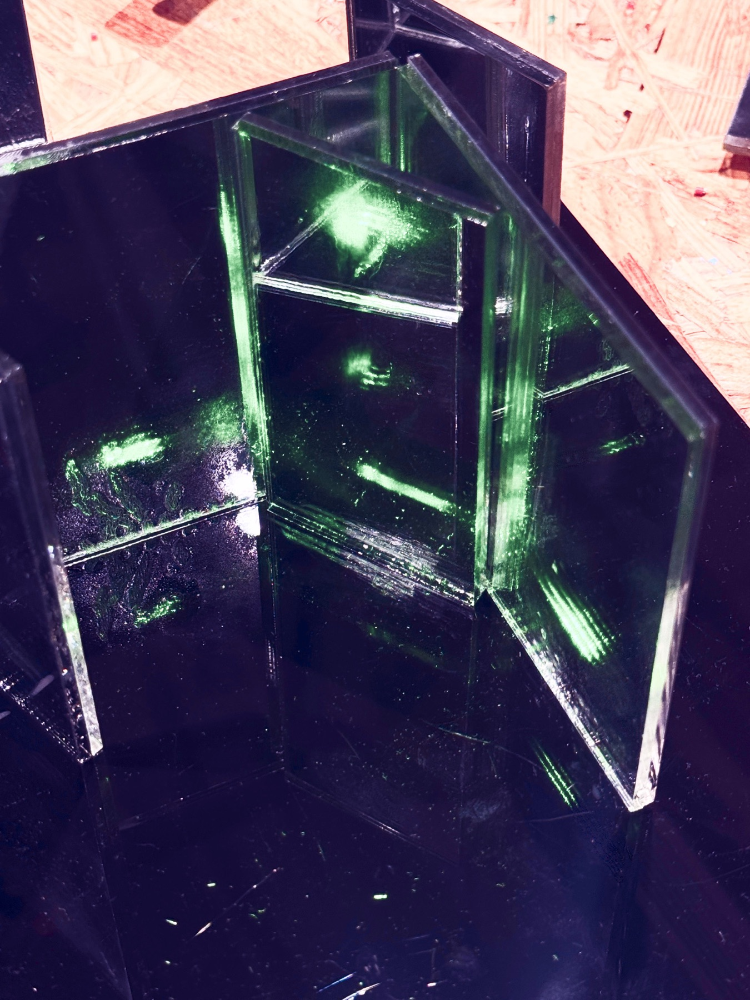
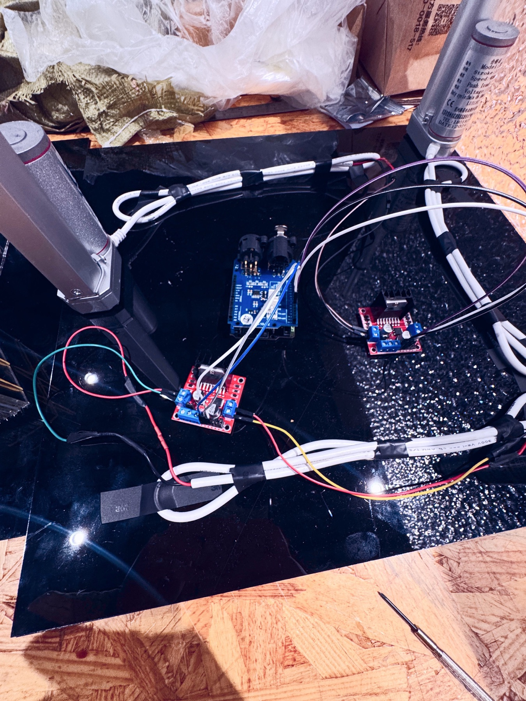
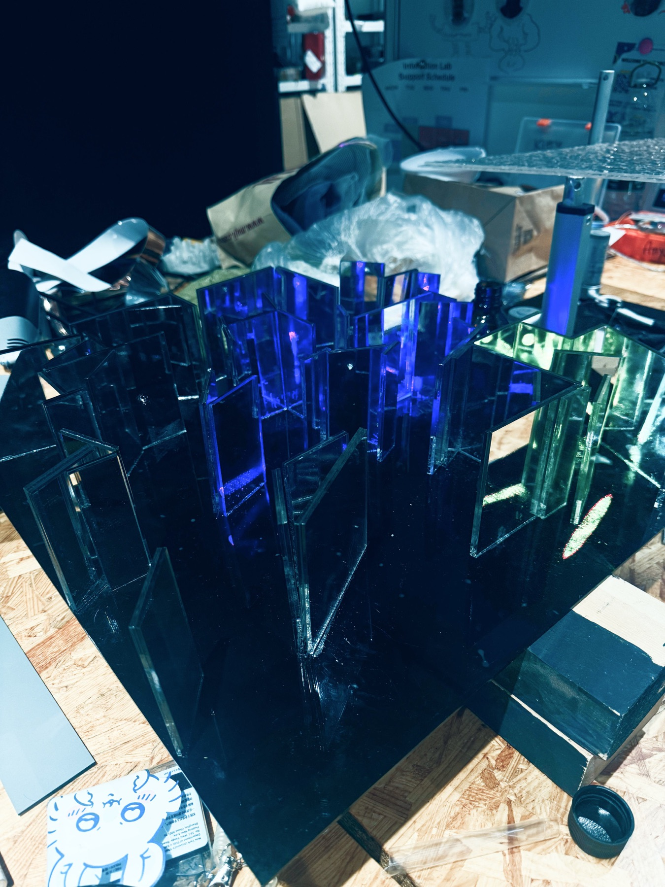
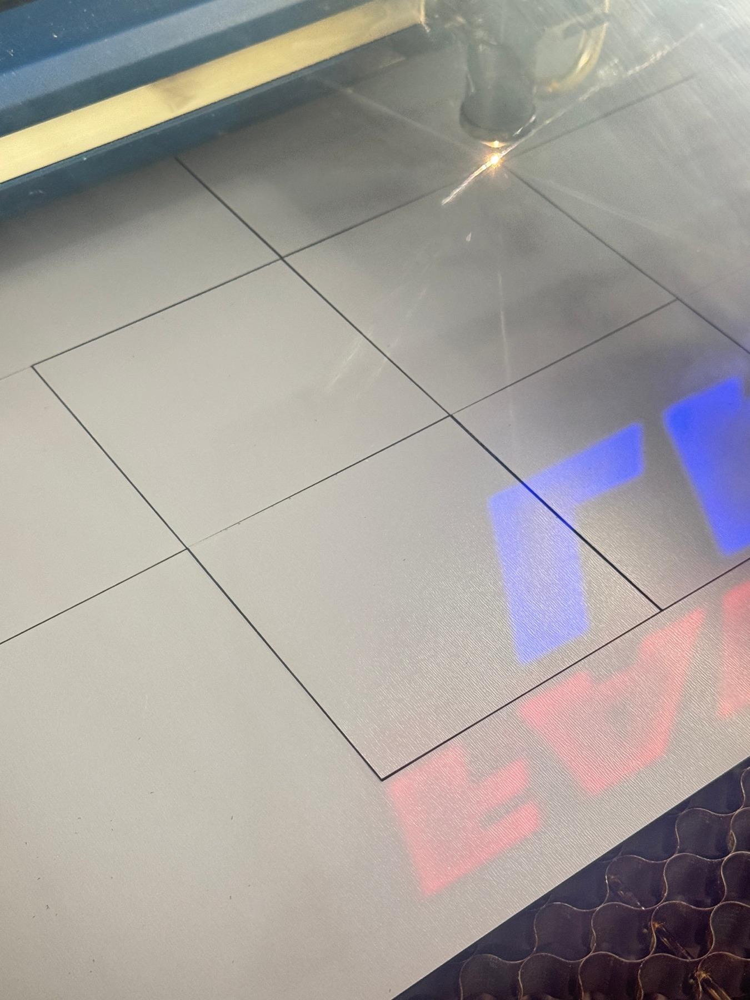
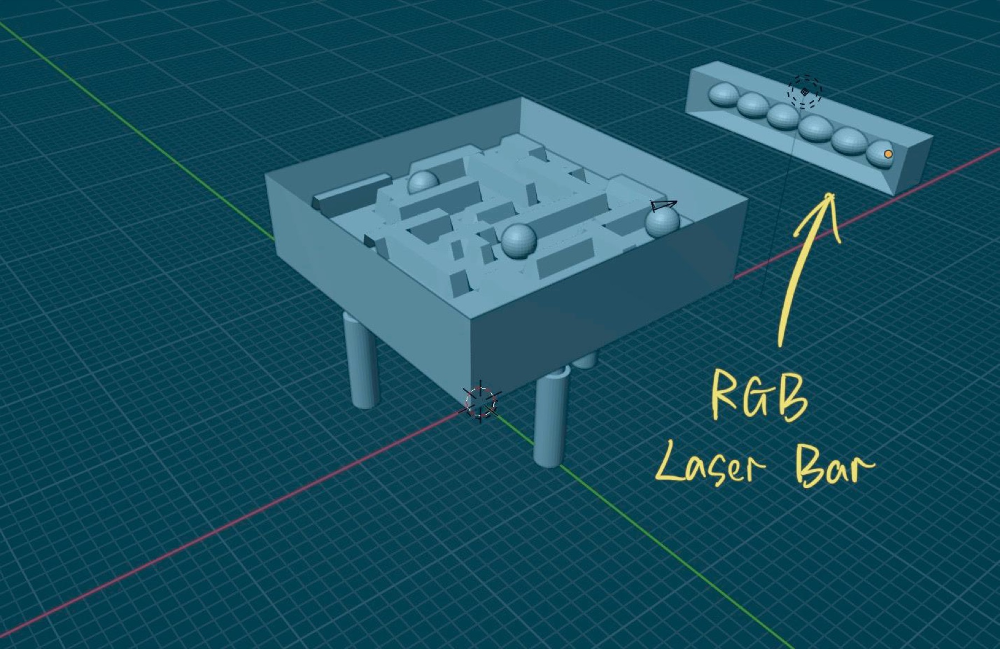
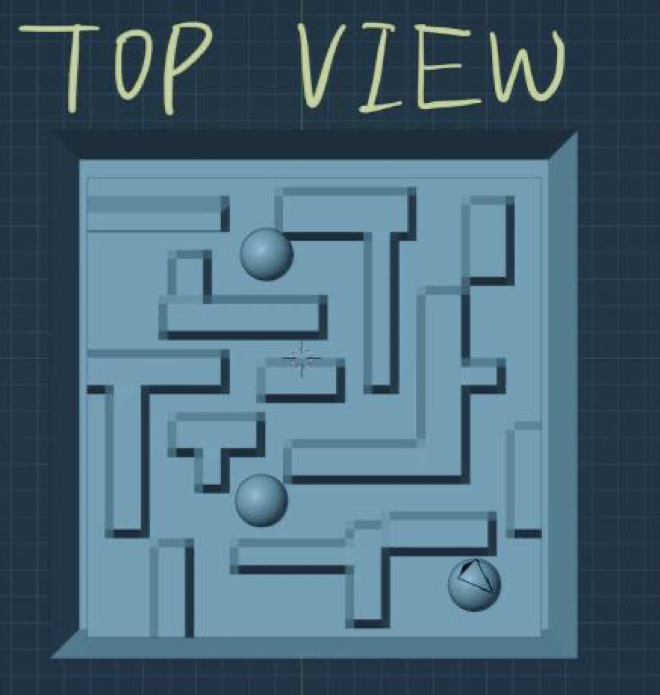
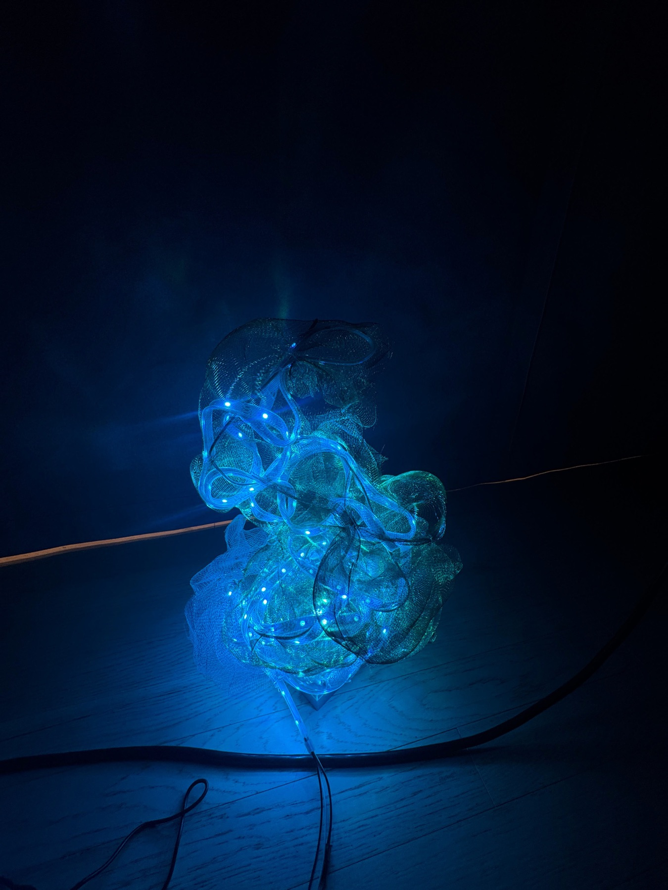
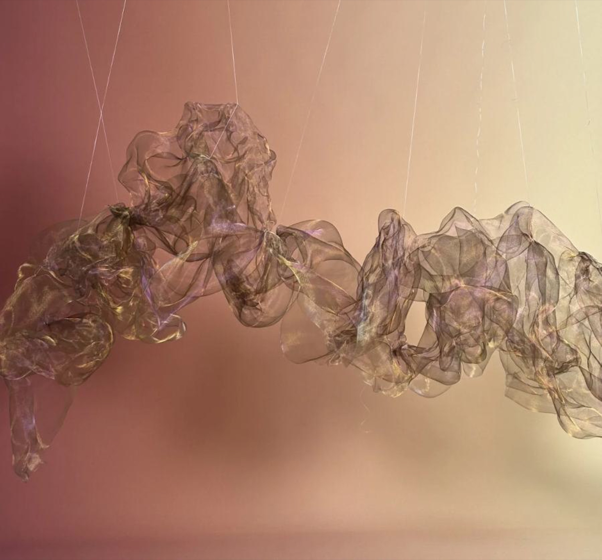
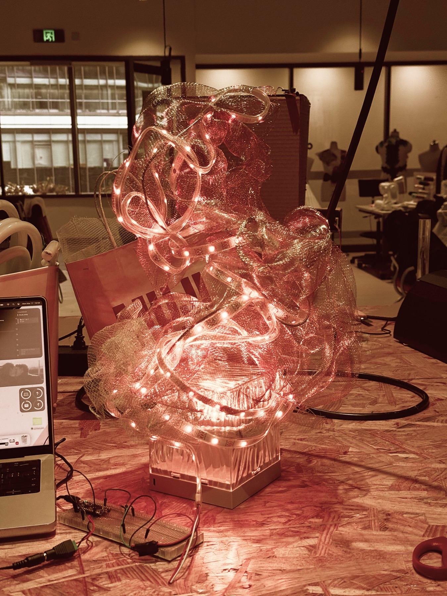

Echo Maze
Kinetic light installation · Mirror maze
Echo Maze uses moving marbles, mirrored walls, and shifting light to explore a simple question: does AI understand emotion, or only reflect it back to us?



Interaction · Unstable meaning
Two actuators tilt the maze at random, so glass marbles and metal spheres roll between the mirror walls and cut through the light. The reflections never settle: meaning shifts each time the context moves, the way it does in a conversation with AI.
- 1Acrylic cover
- 2Mirror maze
- 3Motor-controlled tilting plane
Technique · Light calibration
Every wall is two laser-cut mirrored acrylic panels bonded back to back, so light reflects from both sides. Six RGB light paths were traced by hand with a laser pointer, and a third actuator was removed after testing showed it blocked the incoming beam.






Earlier study · The Emotional-Rational Light Project


